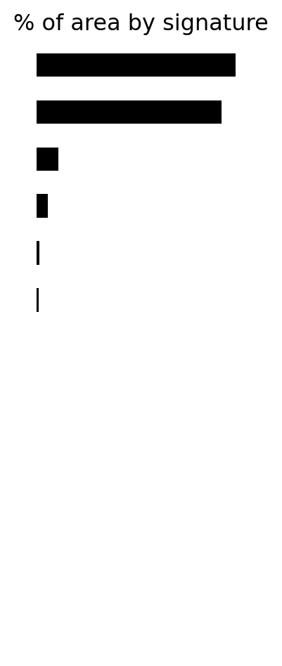

Code
import warnings
warnings.filterwarnings("ignore")
import pandas
import geopandas
import json
import requests
db = geopandas.read_parquet('ss_clipped.pq')Exploring the make up of Green Belts
Dani Arribas-Bel
This capsule considers the make up of green belt areas in England using the Spatial Signatures (Fleischmann and Arribas-Bel 2022). You can see more on the data used, and how they have been combined, in the Data Aquisition section. We reserve this document to present the main results.
We begin with a table that summarises the form and function makeup of English green belts. To do this, we show the total area and the proportion of the total green belt land that is occupied by each of the 16 signature types.1
1 You can see a brief description of these at https://urbangrammarai.xyz/story/#ss
areas = (
db
.assign(area=db.area/1e6)
.groupby('type')
['area']
.sum()
.sort_values(ascending=False)
)
tab = pandas.DataFrame(
{'Area (Sq.Km)': areas, '% of total area': areas * 100 / areas.sum()}
)
(
tab['% of total area']
.sort_values()
.plot.barh(
color='k', figsize=(2, 6), title='% of area by signature'
)
.set_axis_off()
)
tab.round(2)| Area (Sq.Km) | % of total area | |
|---|---|---|
| type | ||
| Urban buffer | 7616.29 | 47.00 |
| Countryside agriculture | 7070.80 | 43.63 |
| Open sprawl | 828.55 | 5.11 |
| Warehouse/Park land | 441.63 | 2.73 |
| Wild countryside | 122.25 | 0.75 |
| Accessible suburbia | 90.12 | 0.56 |
| Dense residential neighbourhoods | 14.03 | 0.09 |
| Disconnected suburbia | 7.76 | 0.05 |
| Dense urban neighbourhoods | 6.50 | 0.04 |
| Connected residential neighbourhoods | 5.45 | 0.03 |
| Hyper concentrated urbanity | 0.92 | 0.01 |
| Local urbanity | 0.18 | 0.00 |
| Gridded residential quarters | 0.09 | 0.00 |

The most common class, “Urban buffer”, is hardly a surprise since the notion of green belt is worked into its very definition. From the original signature descriptions2, Urban buffer is:
“Urban buffer” can be characterised as a green belt around cities. This signature includes mostly agricultural land in the immediate adjacency of towns and cities, often including edge development. It still feels more like countryside than urban, but these signatures are much smaller compared to other countryside types.
What is a bit more interesting is how much (more than 40%) is occupied by “Countryside agriculture”, and even “Open sprawl” (+5%).
The proportions above are national aggregates, and it is possible that the signature mix varies across different urban areas. To explore this, below we present maps to explore five English cities.